Fundos e Cenários
Descarregue aqui ficheiros de apoio a este texto
Existem diversas formas de preencher o fundo de uma renderização. Aqui ficam algumas das mais utilizadas...
World – Angular Map
1- Comece por visitar o endereço http://blenderartists.org/forum/showthread.php?24038-Free-high-res-skymaps-(Massive-07-update!) e faça download de 2 texturas para o fundo do seu World: uma de tipo “Angular Map” (angmap) e outro de tipo “Horizontal Map”. Ambas as imagens têm 360º mas apenas os angmaps correspondem a uma projecção esférica. Para perceber melhor para que servem estas imagens, pense na diferença entre uma esfera e um cilindro/tubo ou uma meia esfera.
2- Aceda ao painel World e active a caixa Real Sky para que o fundo seja renderizado tendo em conta o horizonte real (a grelha na janela 3D View marca o horizonte)
3- Aceda ao painel Texture e adicione uma nova textura do tipo Image or Movie.
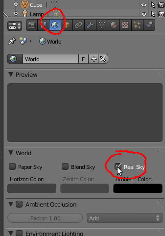4- Escolha coordenadas AngMap e carregue a imagem de tipo Angular Map.
5- ctive a caixa da opção Horizon.
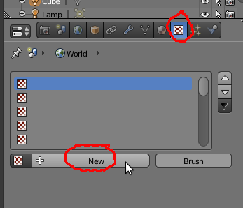 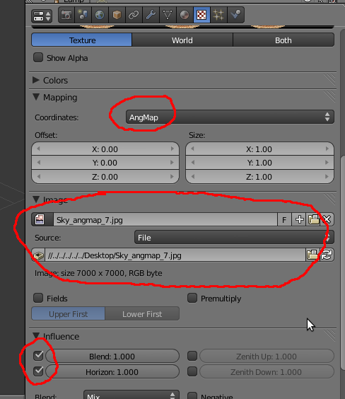6- Se renderizar irá ver que existe uma textura que cobre todo o fundo, independentemente da posição e rotação da câmara. O horizonte da imagem corresponde ao horizonte da janela 3D View (a imagem está a utilizar a grelha para determinar o horizonte).
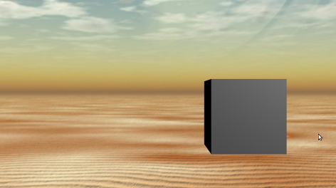 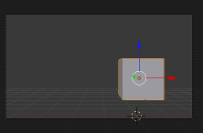 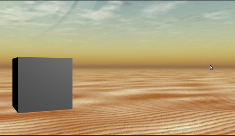World – Horizontal Map
7- Repita os procedimentos anteriores mas desta feita utilize a imagem do tipo Horizontal Map. Não se esqueça de aceder ao painel World antes de ir até ao painel Texture! (É a forma de indicar que vai inserir uma imagem no World e não no objecto)
8- No nosso caso optámos por utilizar coordenadas de tipo Tube. Se clicar na opção Both pode visualizar lado a lado a imagem original e o modo como esta irá surgir aplicada ao World.
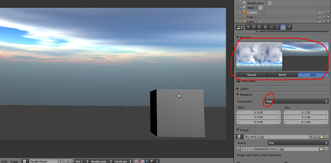9- Esta imagem não tem “chão” mas pode definir a cor do chão através da Horizon Color.
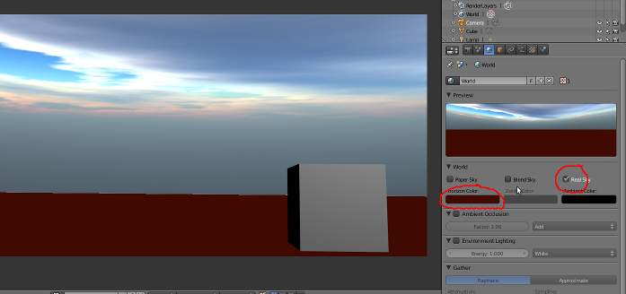Como não existe solo, recomenda-se que utilize este método apenas quando a linha de horizonte da sua imagem está coberta com relevo, prédios, etc.
Outras opções úteis para configuração do Angular Map e do Horizontal Map:
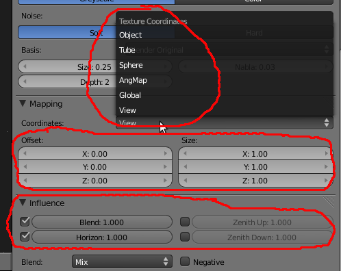Coordinates (coordenadas):
View : orientação por defeito
AngMap: utilizado para os AngMaps (imagens esféricas, projecções de esferas). É um dos métodos mais rápidos e com melhores resultados. A imagem é projectada no mundo como se este fosse esférico. Se quiser que o céu e o solo estejam incluídos, permitindo que a câmara se desloque com total liberdade (imagine um combate aéreo entre dois aviões...) este método é altamente recomendável.
Sphere e Tube: aplica a textura a uma semi-esfera ou um cilindro. Apesar do nome ser Sphere, a imagem só é aplicada à metade superior (acima da linha do horizonte até ao zénite) da esfera. É um processo semelhante ao anterior mas em vez da esfera completa apenas utiliza meia esfera, não cobrindo a área do horizonte ao nadir. Terá de criar o solo e recomenda-se, obviamente, que esconda o horizonte com relevo.
Offset X, Y e Z: posicionamento da imagem.
Size X, Y e Z: dimensão da imagem.
Influence:
Blend: a imagem afecta a progressão (horizonte-zénite) das cores de fundo. Resulta numa mistura entre cores horizonte-zénite e textura. Pode escolher o tipo de Blend.
Horizon: imagem afecta cor do horizonte. Projecta imagem da textura.
Zenith Up e Zenith Down: textura afecta cor do zénite de cima e em baixo (active o Real Sky para perceber os 2 zénites). O zénite de baixo é o nadir.
World – Horizont/Zenith
10- Inicie uma cena nova.
11- Posicione a câmara de forma similar à da imagem (importante: a câmara deve incluir a grelha da janela 3D View)
12- Experimente as seguintes opções...
Blend Sky: transição entre cor de horizonte (baixo) e cor do zénite (topo), esta transição tem em conta que o fundo não é plano, tem em conta a perspectiva. Se reparar na janela de pré-visualização (rectângulo menor no ladodireito), o centro ao topo é mais azul do que os cantos. Ou seja, se
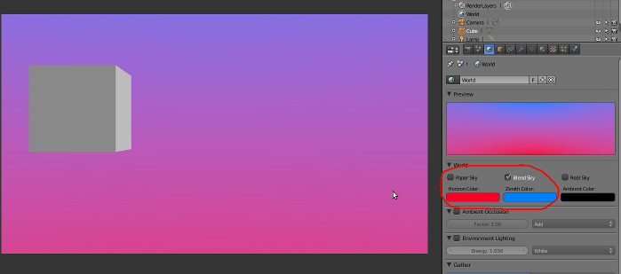Paper Sky + Blend Sky: existe uma transição (Blend Sky) mas o fundo é plano, como se fosse um cenário (Paper Sky).
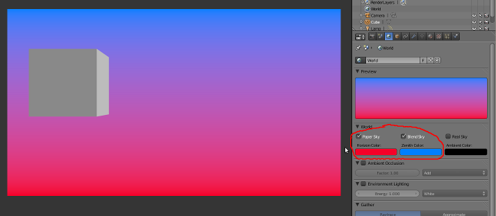Paper Sky + Blend Sky + Real Sky: existe uma transição (Blend Sky) mas o fundo é plano, como se fosse um cenário (Paper Sky) e tem em conta a linha de horizonte (Real Sky).
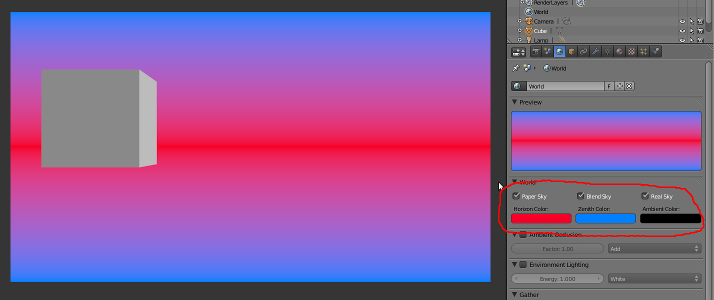Blend Sky + Real Sky: existe uma transição (Blend Sky) e tem em conta a linha de horizonte (Real Sky). Ou seja, quanto mais a câmara estiver apontada para cima ou baixo mais visível será a cor definida no Zénith (a imagem de exemplo não é muito clara...)
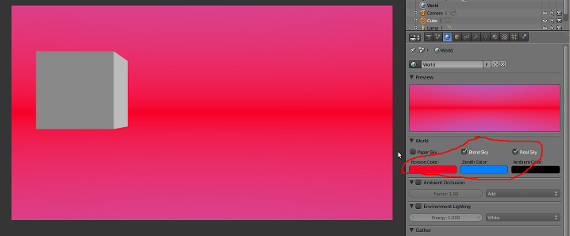Para ilustrar melhor a importância da opção Real Sky, rodámos a câmara de forma à linha da grelha (horizonte) não estar na horizontal.
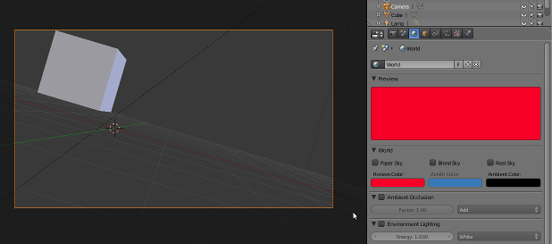Blend Sky: existe uma transição (Blend Sky) e esta não tem em conta o horizonte.
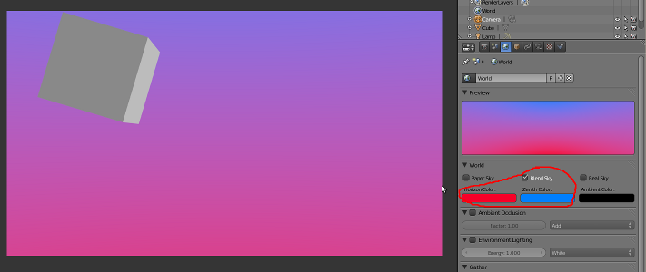Blend Sky + Paper Sky+ Real Sky: existe uma transição (Blend Sky), o fundo é plano (Paper Sky) e tem em conta a linha de horizonte (Real Sky).
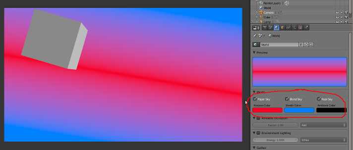Stars: Por último, se quiser umas estrelas no seu fundo, existe uma opção Stars que pode ser activada e configurada (tamanho das estrelas, distância, etc.).
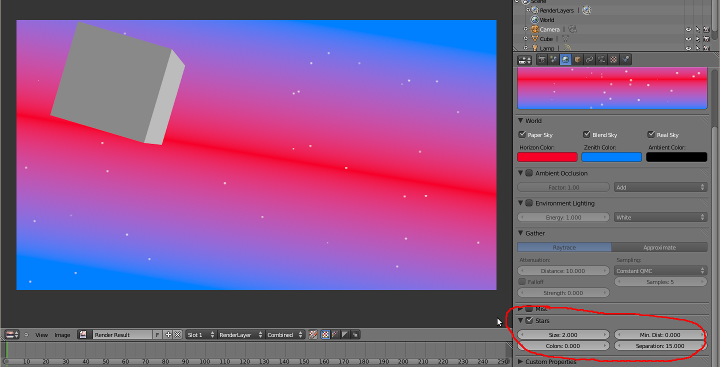Estas opções podem ser utilizadas em conjugação com uma imagem de fundo...
No exemplo abaixo foi utilizada a mesma imagem do tutorial “World – Horizontal Map”...
 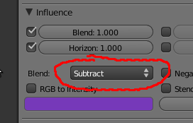
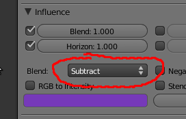
Outras formas “clássicas” mas ainda em uso
13- Crie um plano e aplique uma textura ao plano. No exemplo abaixo foi utilizada uma textura para cobrir o fundo atrás de uma cidade. O plano foi colocado de forma a tapar sempre o fundo tendo em conta o movimento da câmara.
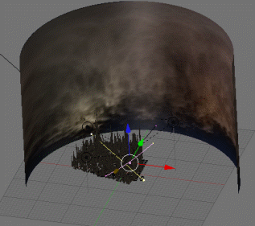14- Crie uma meia esfera (hemisfério) e aplique uma imagem.
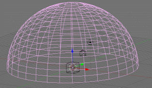Como não existe solo, recomenda-se que utilize estes métodos apenas quando a linha de horizonte da sua imagem está coberta com relevo, prédios, etc.